Se regeneran con python ref/graficos.py. Los PNG están en docs/graficos/ para usarlos en el informe.
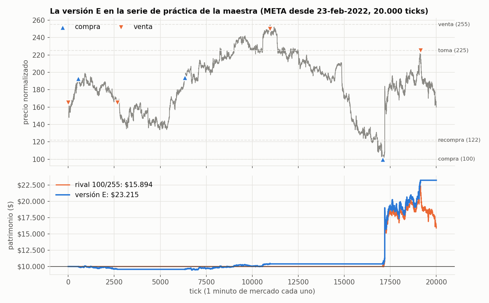
01. Cómo opera la E en una serie. Arriba, el precio con cada orden: triángulo azul = compra, naranjo = venta. Abajo, el patrimonio de la E contra el rival 100/255. La E termina en $23.215, el rival en $15.894 y comprar y mantener en $9.695. Como el primer precio es 165 (≥ 160), el ancla está activa: compra 15 acciones cuando el precio sube 29 sobre el primero y las vende si vuelve a bajar de él (ganancias y pérdidas chicas). En esta serie la diferencia grande la hace la toma de ganancia: después de tocar 255, la E vende apenas el precio vuelve a 225 y guarda la plata, mientras el rival sigue comprado esperando otro 255 que no llega y devuelve la ganancia.
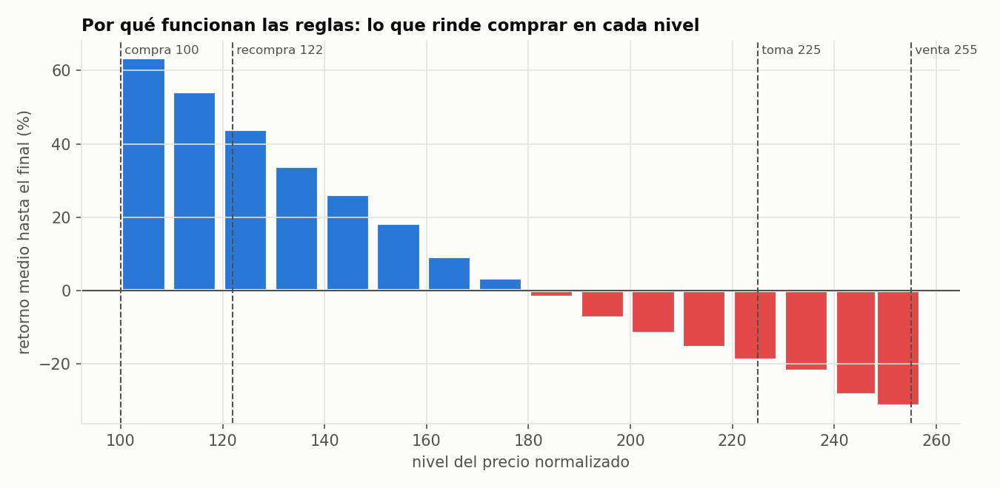
02. Por qué el algoritmo compra abajo y vende arriba. Para cada nivel de precio, cuánto sube o baja en promedio desde ahí hasta el final de la serie (todas las series reales). Comprando en 100–109 se gana +63,5%; vendiendo en 250–255 se evita perder 31,5%. Como la normalización obliga a que la serie toque 100 y 255, el borde de abajo casi siempre rinde y el de arriba casi siempre pierde. Bajo ~175 conviene estar comprado.
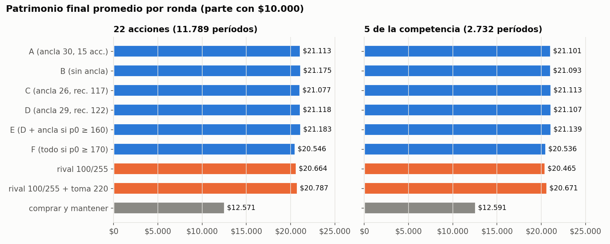
03. Promedio por ronda. Azul = nuestras versiones, naranjo = los rivales, gris = comprar y mantener. Todas las nuestras promedian ~$21.118 contra ~$20.787 de los rivales. Comprar y mantener queda en $12.571. El promedio casi no separa las versiones entre sí: lo que las separa es cuántas rondas le ganan al rival (gráfico 4).
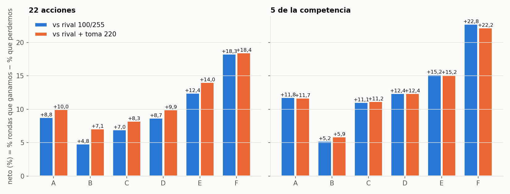
04. Cuántas rondas le ganamos a los rivales. El “neto” es el % de rondas en que terminamos con más plata que el rival menos el % en que terminamos con menos (el resto empata). En las 5 acciones de la competencia la E gana neto +15,2% contra el rival 100/255 (la D +12,4%). La B (sin ancla) gana mucho menos: el ancla es lo que desempata contra compañeros con reglas parecidas, y la E la usa solo cuando conviene.
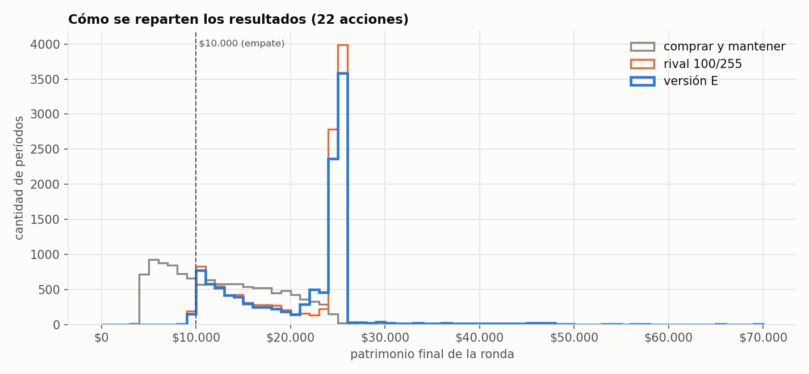
05. Reparto de los resultados. Cada curva cuenta cuántos períodos terminaron en cada patrimonio (no compara ronda por ronda: para eso, el gráfico 04). Comprar y mantener pierde plata en 40,4% de los períodos. La D y el rival casi nunca bajan de $10.000 (la E pierde en 1,3%); la mayoría termina cerca de $20.000 porque la normalización asegura un viaje completo de 100 a 255.
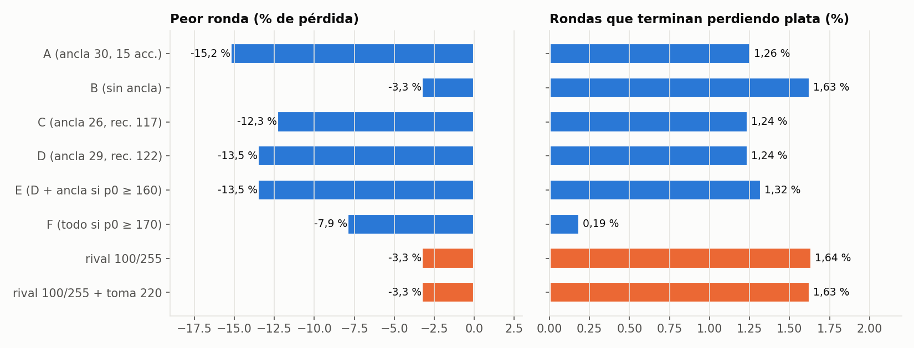
06. Riesgo: la peor ronda y cuántas pierden. En las 22 acciones la peor ronda de la D pierde 13,5% (Intel, dic-2022) y la B solo 3,3%: el ancla compra al comienzo y, si la acción cae fuerte justo después, se pierde. En las 5 de la competencia la peor ronda de la D es 3,0%. Comprar y mantener no aparece: pierde hasta 60,5%.
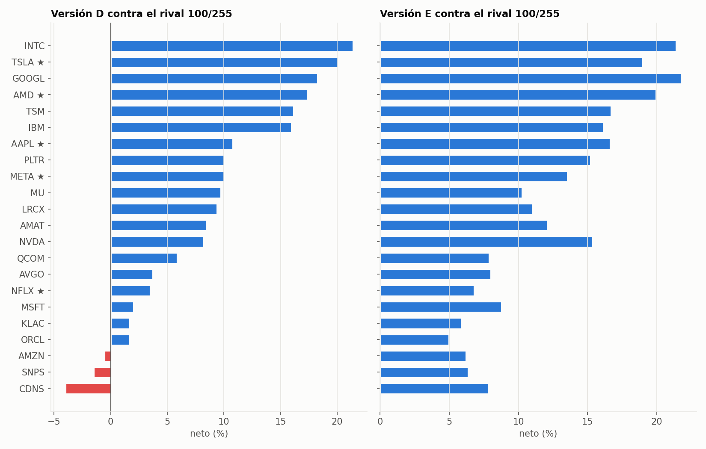
07. Acción por acción. Azul = gana más rondas de las que pierde contra el rival; rojo = pierde más. ★ = acción de la competencia. La D le gana al rival en 19 de 22 acciones (pierde en CDNS, SNPS, AMZN): casi todas esas rondas las pierde el ancla cuando el primer precio es bajo. La E arma el ancla solo si el primer precio es ≥ 160 y le gana al rival en 22 de 22 (la que menos: ORCL, +5,0%).
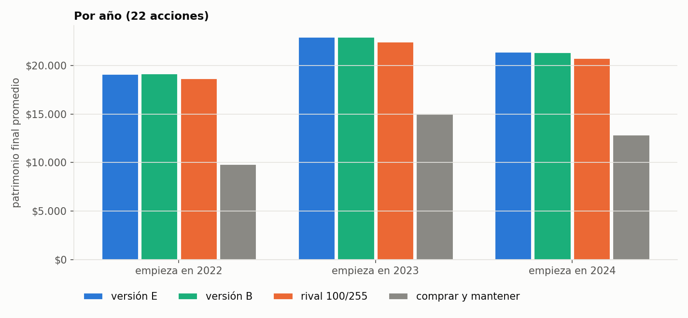
08. Año por año. Promedio de la E según el año en que empieza el período: 2022: $19.175, 2023: $22.993, 2024: $21.470. Comprar y mantener: 2022: $9.849, 2023: $15.062, 2024: $12.911. Los tres años la E le gana al rival y a comprar y mantener. Los períodos que empiezan en 2022 (año bajista) rinden menos para todos, pero el nuestro sigue cerca del doble, mientras comprar y mantener pierde plata.
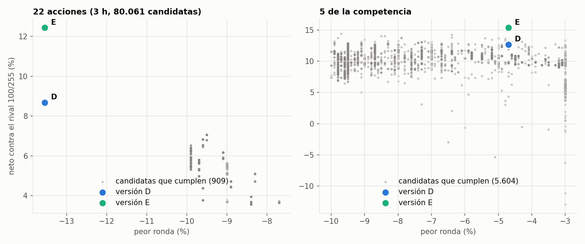
09. Lo que buscó el optimizador. Cada punto gris es una variante que el optimizador probó y que cumple los límites de riesgo. Arriba = le gana más rondas al rival; a la derecha = su peor ronda pierde menos. En las 22 acciones ninguna candidata le gana más rondas al rival que la D: las de peor ronda más chica lo pagan con menos rondas ganadas. En las 5 de la competencia algunas llegan a ~14 % (la D 12,7 %), pero su peor ronda es de −6 a −10 %, y llevadas a las 22 acciones su peor ronda empeora a −19 % hasta −42 % (la D −13,5 %). La E (aqua) es otra cosa: no cambia ninguna constante, agrega la condición p0 ≥ 160 al ancla, y queda por encima de todas las candidatas con la misma peor ronda que la D.
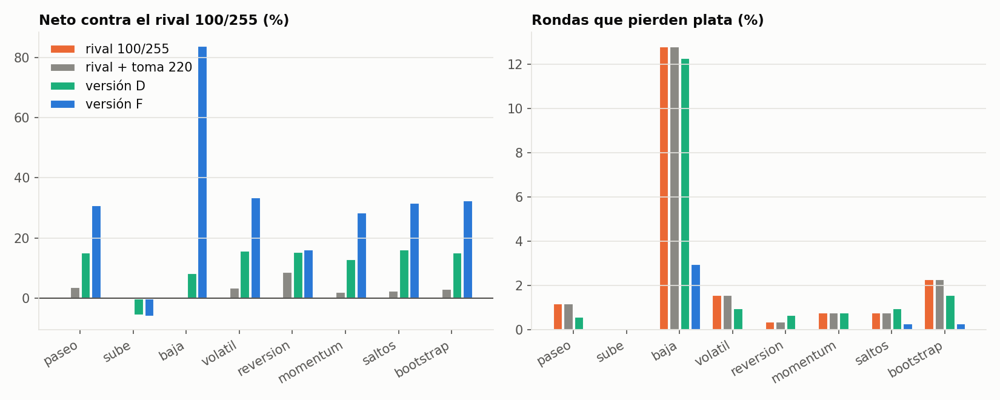
10. Mercados inventados (Montecarlo). 1.000 series simuladas por escenario (paseo al azar, sube, baja, volátil, vuelve a la media, inercia, saltos y remuestreo de días reales), normalizadas como la maestra. La F le gana al rival en unas 30 % más de rondas de las que pierde en casi todos los escenarios, el doble que la D, y pierde plata en menos rondas. En “sube” (mercado que solo sube) todos quedan parejos con el rival.
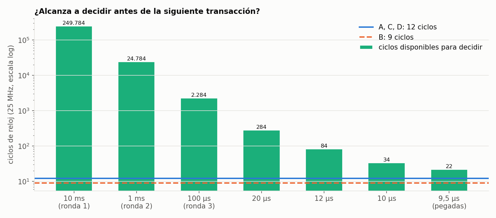
11. Velocidad en cada período de la maestra. Barra = ciclos que hay entre que llega un precio y que la maestra lee la decisión. Línea = lo que tarda nuestro programa en el peor caso, medido en el RTL. Incluso con transacciones pegadas (9,5 µs) quedan 22 ciclos y usamos 12: llega a tiempo en todos los períodos, y por eso la plata es la misma en todas las rondas de velocidad.
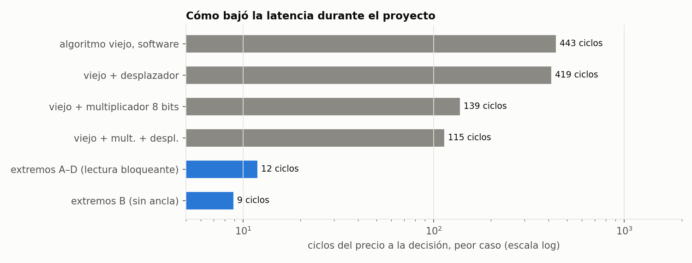
12. Evolución de la latencia. El algoritmo viejo (tendencias con multiplicaciones) tardaba hasta 443 ciclos por precio; con hardware de multiplicación bajó a ~115–140. El algoritmo de extremos solo compara, y con la lectura bloqueante del registro NUEVO (el núcleo espera el precio sin preguntar en un ciclo) llega a 12 ciclos: ~37 veces más rápido.
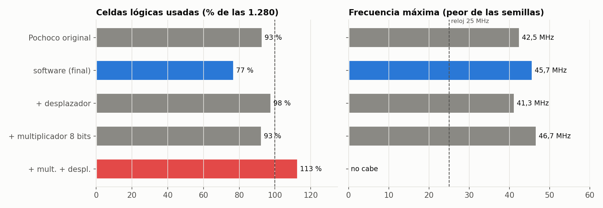
13. Espacio en la FPGA. El diseño final (azul) usa 985 de 1.280 celdas (77 %) y aguanta ~46 MHz, casi el doble de los 25 MHz del reloj. Agregar multiplicador y desplazador juntos no cabe en la iCE40 (rojo). Como el algoritmo final no multiplica, no hace falta ese hardware.